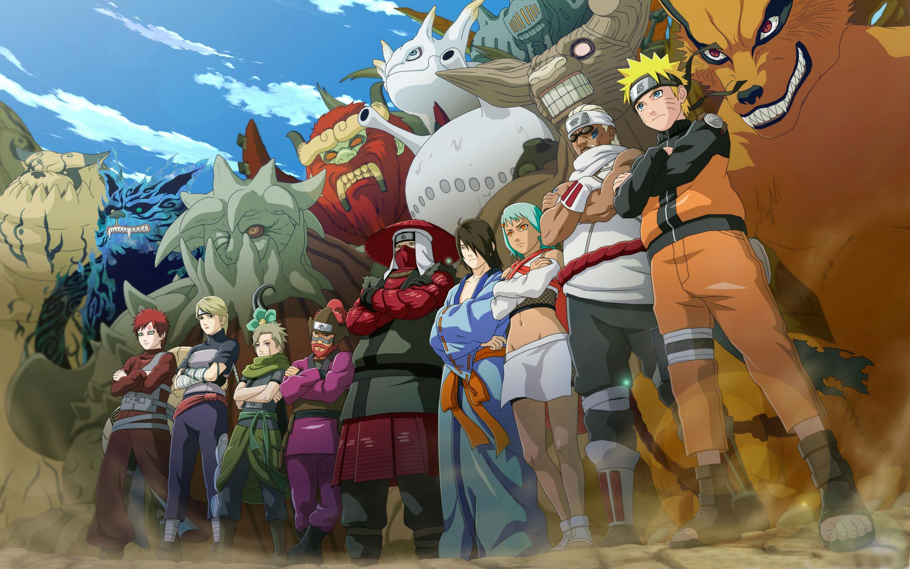
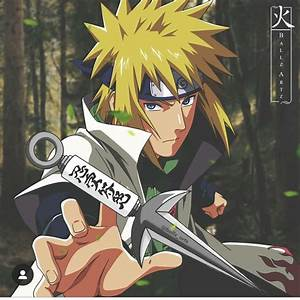
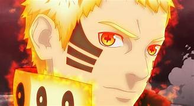
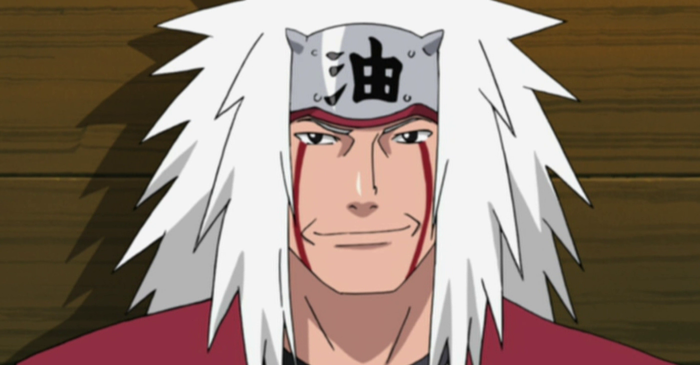
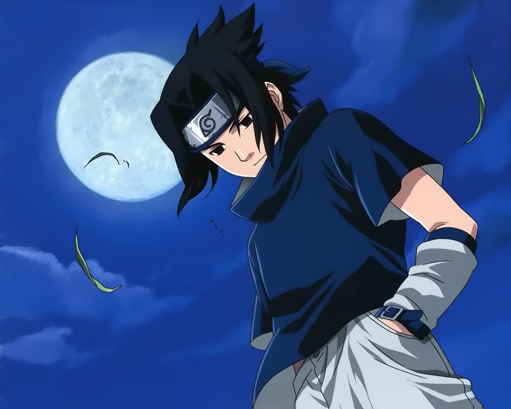

jinchurics
jinchurics e seus respectivos Bijus.

Akatsuki
mercenarios do mal.

Kages
Lideres das 5 principais Vilas.
Historia
Grande guerra Ninja
A quarta e última guerra não foi entre nações, na verdade, elas se uniram contra um inimigo maior ainda: Madara Uchiha. A declaração de guerra veio de Obito, que atuou ao lado de Madara e da Akatsuki, a fim de reunir todas as bestas de caudas e colocar seu falso plano de paz em prática. O conflito reuniu os ninjas mais fortes de todos os tempos em um grupo conhecido como Aliança Shinobi. Muitos personagens importantes e poderosos morreram mas Madara finalmente foi derrotado.
Detalhes da Guerra
 Minato Relampago Amarelo
O primeiro grande conflito começou um pouco depois de todas as aldeias terem sido criadas. Hashirama havia se tornado o primeiro Hokage de Konoha através de eleições e implorou para que a paz fosse mantida. Ele até ofereceu distribuir todas as bestas de caudas entre as aldeias pois assim o nível de poder estaria equilibrado entre os povos e isso evitaria que um atacasse o outro. Entretanto, nunca houve estabilidade.
O primeiro grande conflito começou um pouco depois de todas as aldeias terem sido criadas. Hashirama havia se tornado o primeiro Hokage de Konoha através de eleições e implorou para que a paz fosse mantida. Ele até ofereceu distribuir todas as bestas de caudas entre as aldeias pois assim o nível de poder estaria equilibrado entre os povos e isso evitaria que um atacasse o outro. Entretanto, nunca houve estabilidade.
 Uzumaki Naruto
Naruto trabalhou duro para ganhar o respeito e o reconhecimento da aldeia, com o sonho de se tornar Hokage. Nos anos seguintes, Naruto torna-se um ninja capaz, que é eventualmente considerado como um herói, tanto por parte dos moradores como pelo mundo shinobi em geral.
Naruto trabalhou duro para ganhar o respeito e o reconhecimento da aldeia, com o sonho de se tornar Hokage. Nos anos seguintes, Naruto torna-se um ninja capaz, que é eventualmente considerado como um herói, tanto por parte dos moradores como pelo mundo shinobi em geral.
 Jiraya Sennin
Jiraiya foi um dos Sannin Lendários, junto com Tsunade e Orochimaru, treinados por Hiruzen Sarutobi. Ele era um auto-proclamado super-pervertido, e o escritor da popular série de livros de ficção para adultos, chamado Icha Icha. Ele também era conhecido como o Sábio dos Sapos (Gama Sennin), por causa da sua assinatura de invocação de sapos, e por seu status como sábio.
Jiraiya foi um dos Sannin Lendários, junto com Tsunade e Orochimaru, treinados por Hiruzen Sarutobi. Ele era um auto-proclamado super-pervertido, e o escritor da popular série de livros de ficção para adultos, chamado Icha Icha. Ele também era conhecido como o Sábio dos Sapos (Gama Sennin), por causa da sua assinatura de invocação de sapos, e por seu status como sábio.
 Uchiha Sasuke
Uchiha Sasuke é um dos últimos membros sobreviventes do clã Uchiha de Konohagakure, além de ser a reencarnação atual de Indra. Ele se tornou um shinobi para que pudesse algum dia ficar forte o suficiente para se vingar contra o seu irmão mais velho, Itachi, que tinha massacrado todo o seu clã. Inicialmente, um membro do Time Kakashi de Konoha, Sasuke desertou da aldeia para obter poder com Orochimaru, e mais tarde também se juntou a Akatsuki, tornando-se um criminoso internacional no processo.
Uchiha Sasuke é um dos últimos membros sobreviventes do clã Uchiha de Konohagakure, além de ser a reencarnação atual de Indra. Ele se tornou um shinobi para que pudesse algum dia ficar forte o suficiente para se vingar contra o seu irmão mais velho, Itachi, que tinha massacrado todo o seu clã. Inicialmente, um membro do Time Kakashi de Konoha, Sasuke desertou da aldeia para obter poder com Orochimaru, e mais tarde também se juntou a Akatsuki, tornando-se um criminoso internacional no processo.